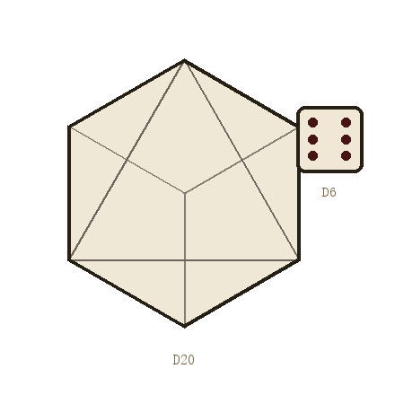

HOW TO ROLL
很多人以为跑团要背一本几百页的规则书。其实规则只是脚手架，真正重要的只有一件事：在规则下，玩家和主持人共同创造出一个小说般精彩又有趣的故事。剩下的条款，都是为了让这件事顺畅地发生。
先说清楚：本页只做最简单的介绍。真正的规则在《克苏鲁的呼唤》第七版规则书（COC 7th）里——完整的技能列表、战斗流程、理智与疯狂、法术与神话生物，都在那本书上。这里只是帮你先弄明白「跑团大概是怎么回事」，不能代替规则书。想认真跑团，请务必去读原书。

桌上最常见的两种骰子：d20 与 d6
COC 使用 d100——也就是两个十面骰，一个当十位、一个当个位，合起来能得到 01 到 100 的任意一个数（00 加 0 读作 100）。
当你想做一件「有可能失败」的事，KP 会让你做一次技能检定：掷 d100，把结果和你这项技能的数值比一比。数值越小越好——掷出的数字小于或等于技能值，就算成功。
举个具体的例子：你的「侦查」是 65。KP 说「你蹲下来检查书桌底下」，你掷出 43，43 ≤ 65，成功，你发现了粘在桌板背面的那把钥匙。如果掷出 78，那就是失败——你什么都没找到，而时间又过去了十分钟。
同一个技能值，掷出的数字越漂亮，结果越漂亮。COC 把成功分成若干等级，规则表如下：
| 结果 | 判定条件 | 掷出范围 | 含义 |
|---|---|---|---|
| 大成功 | 掷出 01 | 01 | 超乎预期地漂亮，KP 通常会额外给你一点好处。 |
| 极难成功 | ≤ 技能值 ÷ 5 | 01 – 13 | 专业水准，做得干净利落。 |
| 困难成功 | ≤ 技能值 ÷ 2 | 01 – 32 | 比普通人做得好，信息更完整。 |
| 常规成功 | ≤ 技能值 | 01 – 65 | 做到了你想做的事。 |
| 失败 | > 技能值 | 66 – 100 | 没做到。故事继续，但代价来了。 |
| 大失败 | 96 – 100（技能值 < 50 时） | 96 – 100 | 不只是失败，还出了岔子：枪卡壳、线索被毁、惊动了不该惊动的人。 |
别怕失败。新手最容易犯的错，是把「失败」当成游戏结束。恰恰相反：检定失败往往才是故事真正开始的地方——你撬锁时弄断了工具、你问话时惊动了对方，KP 由此把剧情推向一个谁都没预料到的方向。
角色卡上最先填的是一组基础属性。它们决定了这个人的底子，也间接决定了各种技能的起始值。
| 属性 | 英文 | 常见范围 | 它管什么 |
|---|---|---|---|
| 力量 | STR | 30 – 90 | 搬、推、拽、砸。肉搏伤害也看它。 |
| 体质 | CON | 30 – 90 | 扛得住吗。中毒、溺水、熬夜，都归它。 |
| 体型 | SIZ | 30 – 90 | 身高体重。影响体力上限，也影响你躲不躲得开。 |
| 敏捷 | DEX | 30 – 90 | 谁先动。逃跑、闪避、悄悄走路。 |
| 外貌 | APP | 30 – 90 | 第一印象。说服、套话、被记住的概率。 |
| 智力 | INT | 30 – 90 | 想得起来吗。灵感、推理、临时应变。 |
| 意志 | POW | 30 – 90 | 精神强度。面对难以理解之物时，撑不撑得住。 |
| 教育 | EDU | 30 – 90 | 读过多少书。决定技能点的多少，也决定你「知道」什么。 |
属性一般由掷骰生成（3d6 再乘 5），也可以和 KP 商量着直接定一个符合人物设定的数。表中 30 – 90 是多数角色的常见区间，偶尔掷出 15 或 90 这样的极端值也很正常。没有「最优解」——一个力量 40、教育 80 的瘦弱学者，往往比一个全属性均衡的人更有意思。
属性是天生的，技能是后天学的。创建角色时，你会有一定数量的技能点可以分配，把它们撒在符合你职业和经历的项目上。
技能值通常写在 1 到 99 之间。50 左右是「受过训练的普通人」，70 以上是「这行的专家」，90 以上基本可以算传奇了。
下一页：有了规则，还得有个人物。去角色卡看一张完整的示例。